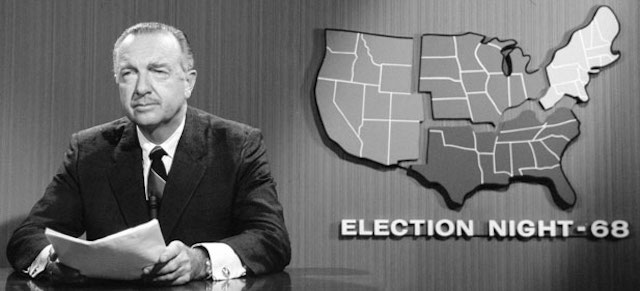

2017-06-21 08:00

Last night Jon Ossoff lost the Georgia 6th Congressional District special election to Good ol’ Gal Karen Handel. There was, predictably, some crying and finger-pointing but it was generally acknowledged that Democrats need to find a winning strategy. A piece in Washington Monthly advised Dems to stop chasing Romney voters, pointing out just how wrong Chuck Schumer was when he said: “For every blue-collar Democrat we lose in western Pennsylvania, we will pick up two moderate Republicans in the suburbs in Philadelphia, and you can repeat that in Ohio and Illinois and Wisconsin.”
A McClatchy piece and an article in TPM both reminded readers that Ossoff’s upscale district is nevertheless in the Heart of Dixie and Ossoff’s centrist Democratic “supporters, even when combined with politically moderate independents, couldn’t outnumber Republican partisans.” Demographics, not progressives, and not the DNC, are what defeated Ossoff. However, the loss does not signify the impotence or the end of the Democratic Party. But we seem to be missing opportunities to reach out with an honest economic message to people who might actually be receptive.
Donald Trump hasn’t said much about Ford’s plans to move its Ford Focus assembly to China although he will almost certainly blame the move on insufficient tax breaks for billionaires. But will the Billionaire-in-Chief slap huge tariffs on Ford when they begin re-importing the cars? …. Don’t hold your breath.
Another American reversal-of-fortune has occurred on Donald Trump’s watch: Saudi Arabia just assumed total control of America’s largest refinery in Port Arthur, Texas. When asked how the purchase squared with Trump’s protectionist promises, Saudi ARAMCO CEO Amin Nasser smiled and sounded grateful for ARAMCO’s cozy relationship with the administration: “We don’t like to see any kind of protectionist measures…” It’s doubtful that the Saudi billionaires will ever see any.
Speaking of Saudi Arabia, this is a country with no Emoluments Clause. For that matter there aren’t many legal protections for anyone in what is essentially a family-owned business (slash nation) governed by a dictatorship and greased by nepotism. No wonder Trump loves the Saudis so much. Today the Saudi king announced a big shakeup, replacing most of what in a democracy would be cabinet or portfolio members with – what else – members of the Saudi royal family. The dictator also named his 31 year-old son to be the new heir. I thought this was the sort of thing that really disturbs us when Syria and North Korea do it… but guess not. We should probably count our blessings that Trump has run out of children and in-laws to stick in the White House.
You can’t wage war nonstop for three decades and not kill civilians. The U.S. has killed more than half a million since 9/11 but now it turns out that the US is also responsible for half of all civilian casualties since 2010.
Who are the real terrorists?